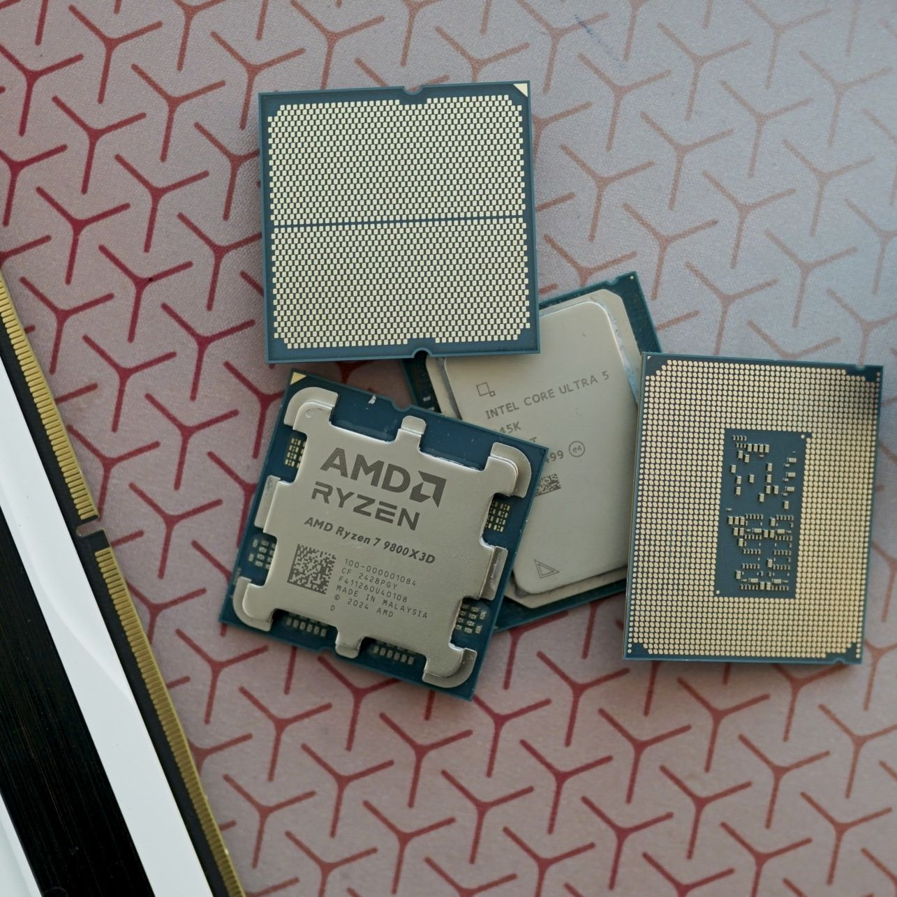
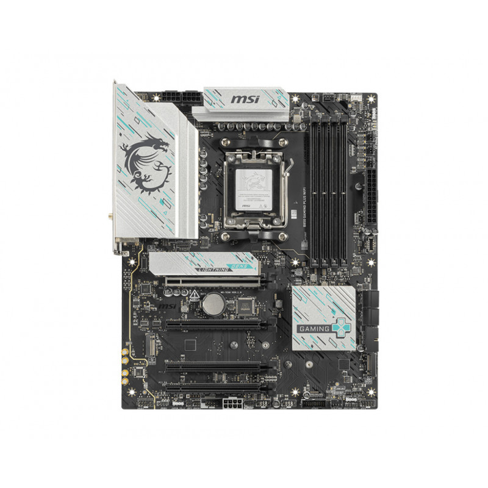
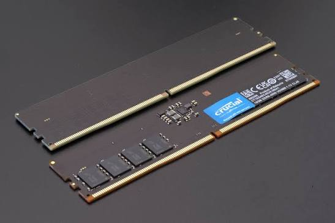
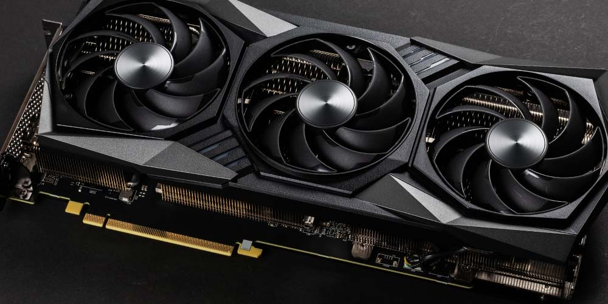
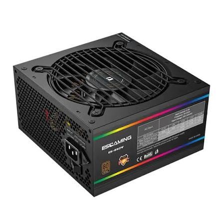
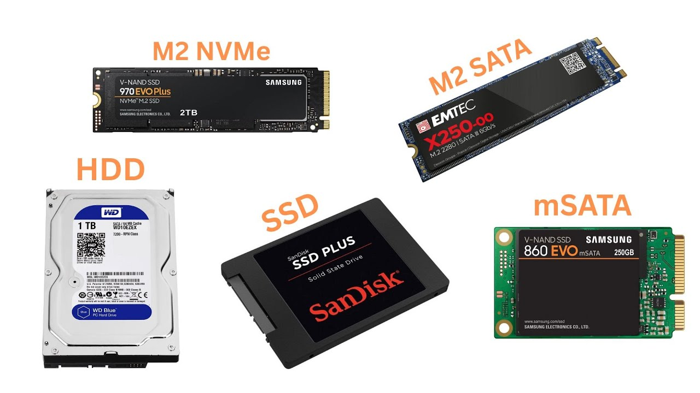
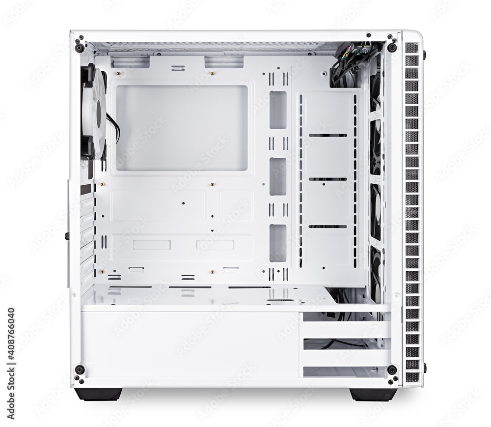

Prosessori (CPU)
Tietokoneen aivot, hoitaa laskennan ja käynnistää ohjelmat, yleisimmät mallit ovat Intel Core i3,i5,i7 ja i9. AMD puolelta taas Ryzen-sarjan prosessorit

Tietokoneen aivot, hoitaa laskennan ja käynnistää ohjelmat, yleisimmät mallit ovat Intel Core i3,i5,i7 ja i9. AMD puolelta taas Ryzen-sarjan prosessorit

Emolevy yhdistää osat toisiinsa, se on tietokoneen pääpiirilevy, emolevy tyyppejä on montaa eri mallia, merkittävin ero on prosessorityyppi, sillä Intel -ja AMD prosessorien kanta on eri

Koneen nopea työmuisti, jonne käynnissä olevat ohjelmat ja pelit latautuvat. Yleisimmät koot ovat 8GB, 16GB ja 32GB.

Piirtää kuvan näytölle, näytönohjaimia käytetään erityisesti pelikäytössä sekä graafisen työn suorittamisessa.

Virtalähde muuttaa verkkojännitteen (AC) tasajännitteeksi (DC)

Tallennustila on tietokoneen pitkäkestoinen muisti jonne kaikki lataamasti pelit, kuvat, videot ja muut tiedostot tallentuvat. Nykyisin yleisimmät ovat SSD ja HDD.

Koteloon sijoitetaan komponentit sekä jäähdytyskomponetteja.